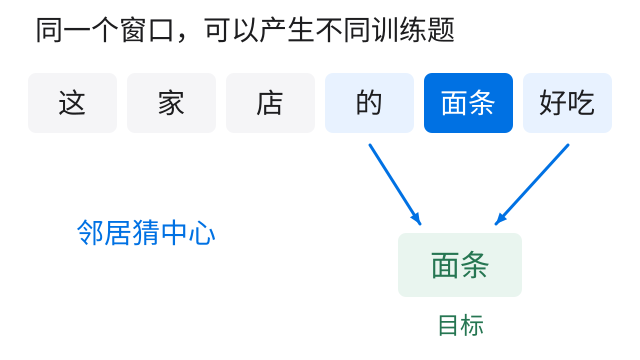
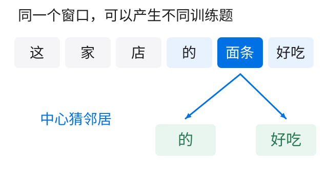

词典编号只方便查找，第 101 号词和第 102 号词不一定意思相近。词向量给每个词分配一组可学习的数值，希望那些常在相似语境里出现的词，在这组数值构成的空间里也呈现某种关系。训练信号就藏在普通句子里。
把一句话改写成预测题
先将“这 家 店 的 面条 好吃”切成六个词，并约定窗口只看中心词左右各一个词。以“面条”为中心，能看到“的”和“好吃”。CBOW 把两边的词作为输入，让模型猜中间是谁。Skip-gram 则用“面条”分别出两道题，预测一次“的”，再预测一次“好吃”。窗口沿着句子移动，同一小段文字就能提供许多组输入与目标。
把一句话拆成可以训练的小问题
用“这 家 店 的 面条 好吃”这六个已分好的词，中心是面条，窗口只取左右各一个词。蓝色深浅区分中心与邻居，灰色词暂时在窗口外；分词与窗口选择会决定实际训练信号。
固定这一处窗口
查看大图
以面条为中心，左边最近的是“的”，右边最近的是“好吃”。本次窗口只有这三个词，因此“店”虽然离主题很近，也没有直接进入这一处的训练配对。将窗口向左移动，中心、邻居及产生的题目都会随之改变。

CBOW：从邻居猜中心
查看大图
把“的”和“好吃”的输入向量汇合，再让模型给中心候选打分。正确目标是面条。汇合常采用求和或平均，这是这一种简单 CBOW 设定；模型通过许多这样的题目调整向量，而不是人工把“好吃”这个维度直接写进面条的表示。

Skip-gram：从中心猜邻居
查看大图
现在把方向反过来：输入面条，先构成“面条预测的”，再构成“面条预测好吃”两对训练样本。它们共享同一个中心输入，却是两个上下文预测题。大量句子里反复出现的相似窗口，会给不同词带来相似的更新信号。
词向量从预测任务里学习关系。图中的箭头表示输入与监督目标，不是词之间真实存在某条固定语义边。
小练习：保持左右各一词，把中心移到“店”，Skip-gram 会生成哪两对样本？
“店 → 家”和“店 → 的”。窗口只覆盖紧邻位置，不会自动跳过功能词去选择更有主题意义的词。
如果许多评论还写“这家店的饺子好吃”，那么“面条”和“饺子”在相近位置会接受相似的训练信号。初始化时二者完全可以毫无关系；多次预测和修正以后，它们的表示往往会靠近。窗口扩大后，输入里可能出现“排队”“服务”等更远的词，模型学到的关系也会向共同主题倾斜。换一部小说做语料，对人物与地点学到的邻居自然会不一样。
训练时究竟改了哪些数
可以把模型想成两张表。第一张表按输入词取出一行向量，第二张表给每个待预测的词一行向量。两行对应位置相乘再求和，就得到一项匹配分数。在 CBOW 的简单形式里，会先把几个上下文的输入向量求和或求平均，再给候选词逐个打分。训练时目标词分数偏低，就沿着能让它更容易被选中的方向微调相应参数。
词表可能有上万个条目，每次都给全部词评分计算量很大。负采样把一组实际出现的中心词和上下文视为正例，再抽少量别的词组成负例，让模型学习区分。抽到的词只是在这道训练题里作陪衬，它完全可能在别的句子里与同一中心词一起出现。因此，单次更新的结果意义有限，要看大量语境积累后的向量结构。
拿一个正例试算负采样的打分方向。假设输入向量是 (1,0)，目标上下文的输出向量是 (0.2,0.8)，点积为 0.2。用于二元训练的 sigmoid 把这个分数变成 1/(1+exp(−0.2))，约为 0.55。对于真实共现的正例，目标是把它向 1 推；若这组词被抽作负例，目标便向 0 推。这个二元判别值不等于“候选词在完整词表中的概率”，不能把多个负采样分数直接当成总和为 1 的分布。
手算一次“邻居有多近”
假设画图时把三个教学向量简化成二维，取“面条”=(1,0)、“饺子”=(0.8,0.6)、“车站”=(0,1)。余弦相似度的算法是先算点积，再除以两个向量的长度。这里三者长度恰好都是 1，“面条”与“饺子”得到 0.8，与“车站”得到 0。若把“饺子”整行乘以 2，它的点积翻倍，长度也翻倍，余弦相似度仍为 0.8。真实训练中的每一维通常没有这样可命名的含义。
查近邻时可以挑一组近义词、一组相反词和一个罕见词做对照。“好吃”和“难吃”都适合接在“面条很”后面，向量可能接近，即使它们表达相反评价。罕见词若只出现过两三次，很容易跟偶然同场的人名靠近。读近邻表时回到语料，抽几条原句看窗口究竟包含什么，才知道这次“近”反映的是语义、句法位置，还是样本太少。
向量本身还依赖训练时的坐标基准。试着把纸上的三个二维向量全部顺时针转 90 度，它们的各个分量都变了，两两夹角却保持原样。由此可以理解，比较两次独立训练时，直接逐维相减通常缺少意义。可以在相同测试词上比较近邻名单、同义词排序和下游任务的结果，或者在确实需要逐点比较时先用共同词做空间对齐。

区分词频、词义与模型版本
把“苹果”放进两组小语料，一组大量出现“新鲜、水果、酸甜”，另一组大量出现“手机、发布、芯片”。静态词向量通常给同一个词表项存一行向量，两种语境对同一行共同施加更新。查看近邻时，某一义项占优势可能只是该义项在训练文本中更常出现。把两类句子分组统计上下文，往往比替这个向量的某一个维度取个名字更有解释力。
若想比较窗口宽度，固定分词、语料顺序、向量维数和训练轮数，仅将窗口从左右各一词改为各三词。用出现频率相近的一组词做查询，记录前五邻居并回看原句。对未登录词单独记为“词表外”，别把它和相似度为零的已知词合并统计。这样，实验反映的是上下文范围变化，并能看到哪些结果主要受词频稀少影响。